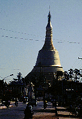
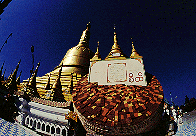
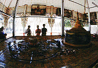
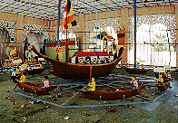
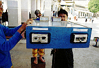
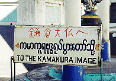
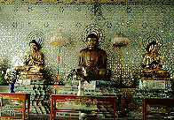
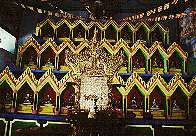

シュエモードパゴダ/バゴー
ShweMawdawPagoda/Bago
ヤンゴンの北東約70キロにある古都バゴー。ヤンゴンから日帰り圏内なので結構観光客も多い。
そこにはミャンマーで最も高い114メートルという仏塔を擁する大寺院シュエモードパゴダがある。

あと2メートル高ければ世界最大になっていたシュエモードパゴダの仏塔。尋常じゃない位大きい。が、周りに何もないので案外その大きさは捉えにくい。

かつて地震で崩落した仏塔の一部が飾られている。


ここにもありました。回転賽銭装置。左のものは周りの小さな舟が回転して皆様の小銭、というか少額紙幣を回収する。右のものは写真の左側の鉢に投げ込む。右の仏塔は回転するが単なる飾り。

もうひとつ参拝娯楽装置を。一辺に二個づつ覗き窓が付いていて、中にはミャンマーの観光地や仏像などの立体写真が視られるという仕組み。
一つ覗いて「おお〜っ」となると左のおじさんがニヤリと笑って90度回転させる。
これを4回くり返すと一通り視たことになる。
つまりおじさんはコレを回転させるためだけにひなが一日ここにいるのである。


いきなり「鎌倉大仏へ」という看板が。行ってみると確かに鎌倉の大仏さんに良く似た仏像が。これはスズキさんという方が奉納したものらしい。

仏陀のアパート。それにしてもこの色彩感覚。だんだんハッピーになってくる。
次のスポットへGO!
ミャンマーパゴダ列伝のページへ
珍寺大道場 HOME